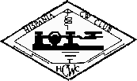

Det europeiska CW-förbundet
Kört EUCW Diplom

|  |
Det europeiska CW-förbundetKört EUCW Diplom |
|
Allmänna regler
1. Detta prestigfulla diplom är tillgängligt
för alla licensierade radioamatörer och kortvågslyssnare
var som helst i världen.
2. Enbart kontakter genomförda efter
den 27:e April 1991,
(Samuel F.B. Morses tvåhundraåriga födelsedag)
gäller för detta diplom.
3.
Ansökaren skall skicka en lista med kontakter
(eller hörda SWL-stationer
[SWL-stationer listar hörda stationer, översättarens anmärkning])
för vilka QSL-kort mottagits.
Listan måste vidimeras av en licensierad radioamatör som är
medlem i en EUCW-klubb och som anger namnet på sin klubb
och sitt medlemsskapsnummer.
4.
Listan skall innehålla
datum för kontakten,
anropssignal på den körda stationen,
band,
namn på operatören,
QTH,
EUCW-klubb,
klubb medlemsnummer.
5.
Se http://www.scag.se/eucw-sv/eucw.html
för att hitta en lista med EUCW-klubbar.
6.
Olika certifikat utfärdas för varje klass på diplomet.
7.
Avgiften är EUR 6, USD 8 eller 12 IRS.
8.
Ansökningar för diploment skall skickas till diplomfunktionären:
Denna post är för närvarande inte besatt.
Diplomspekulanter bör sitta på sin ansökan tills dess att
en ny diplomfunktionär offentliggörs.
[Längre ner på sidan
står det vem diplomfunktionären är.
Det är f.n. oklart om det är denna information eller informationen
nedan är gammal. Översättarens anmärkning]
9.
Diplomfunktionärens beslut är slutgiltigt för alla ansökningar.
Krav för diplomet
1.
Bekräftade kontakter på bara telegrafi.
(Lyssnaramatörer - hörda telegrafistationer)
med 100 olika stationer som är medlemmar i EUCW-klubbar,
på tre olika amatörradioband med åtminstone 20 stationer
körda eller hörda på varje ban.
2.
De 100 stationerna körda eller hörda på tre band
måste inkludera åtminstone tre medlemmar från vardera av sex olika
EUCW-klubbar.
3.
Upp till 40 stationer körda eller hörda den 27:de April, 1991,
på tvåhundraårsdagen av Samuel F.B. Morses födelse,
kommer att räknas som dubbla kontakter.
Alla andra krav är oförändrade.
Diplomets klasser
a) Vanliga diplomet -
100 tvåvägskontakter genomförda med tillåten sändningseffekt.
b) QRP diplomet -
100 tvåvägskontakter genomföra då ansökaren inte använder
mer än 5 warr r.f. uteffekt.
c) Lyssnaramatördiplomet -
100 hörda stationer oavsett effekt.
Certifikat
De attraktiva diplomcertifikaten är tryckta på tungt papper
av pergamenttyp och har en bild av Europa
"på Samuel F.B. Morses tid".
Klicka här för att se diplomets utseende.
EUCWdiplomfunktionär:
DK7VW, Werner 'Joe' Jochem, Wendelsborn 34, D-66606 St. Wendel,
E-mail:...joe (at-symbol) dk7vw.de...
{kind=link}